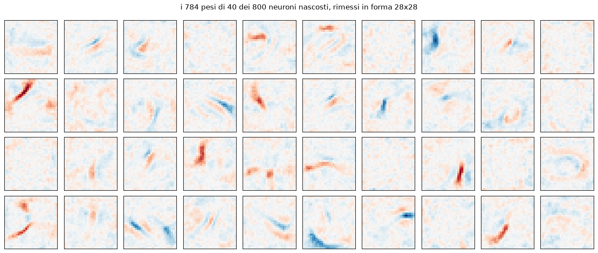

La rete
784 pixel in ingresso, 800 neuroni nascosti con tanh, 10 cifre in uscita. 636.010 parametri allenati su MNIST, 99% su test. Girano qui dentro senza nessuna libreria: due matrice-per-vettore e una tanh.
Disegna una cifra
Cosa vede la rete
normalizzata
box da 20px, baricentro centrato: e' questa che entra nella rete
solo ridotta
il canvas schiacciato a 28x28: dice —
La rete dice
—
Questa MLP non ha nessuna invarianza per traslazione, i suoi 800 neuroni nascosti sono macchie ognuna sensibile a una zona precisa — qui sotto.

01_network.py.